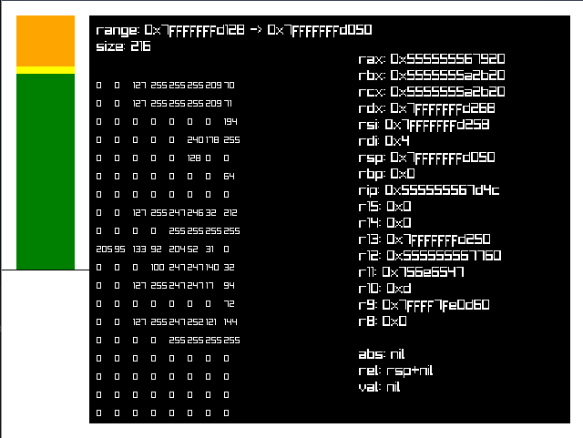

I'm suggesting so highly rn.
motivaption
Making your own debugger is criminally easy. For certain simple cases, it is much more complex to configure an existing debugger to work for you than it is to just write your own, and once you have your own debugger you can easily modify it to work for new projects, since you understand all the code.
Most of this blog post consists of me telling you about cool libc functions. It is your job to
put them together into a debugger. You are encouraged to explore things by/for yourself.
aforementioned cool libc functions
These examples will be using the
nix crate with the ptrace
feature enabled.
fork
fork is
simple. It duplicates the process. If you are now running as the parent, the child
process id is returned. If you are now running as the child, 0 is returned.
use nix::libc::fork;
println!("Hello, World!");
let pid = unsafe { fork() };
if pid == 0 {
println!("I am the child process (PID={pid})");
} else {
println!("I am the parent process (PID={pid})");
}
The console output will look something like this:
Hello, World!
I am the parent process (PID=172471)
I am the child process (PID=0)
exec
There are many exec functions but they all do the same thing. They all replace the current process with a new process.
use nix::unistd::execve;
execve(c"/bin/echo", &[c"echo", c"Hi!"], &[c"HOME=/usr/home"])?;
unreachable!("exec never returns becaues it replaces the entire process");
The console output will look something like this:
Hi!
execl* functions accept arguments variadic-ly. execv* functions accept arguments
as a list. exec*e functions allow you to set the environment variables of the new process.
exec*p functions will search for the program to be executed in the PATH
environment variable instead of requiring absolute paths.
waitpid
waitpid
waits for a process to change status, usually by a system interrupt. We can use this to wait for certain
events to fire.
use nix::sys::wait::{WaitPidFlag, waitpid};
let status = waitpid(child_pid, Some(WaitPidFlag::WNOHANG))?;
if let WaitStatus::Stopped::Exited(_, _) = status {
println!("The process exited.");
}
personality
personality sets a
bunch
of different execution options for the current process. We will be using the ADDR_NO_RANDOMIZE
flag to disable
ASLR. This makes reading and
interpreting the addresses of functions much easier.
use nix::libc::{ADDR_NO_RANDOMIZE, personality};
unsafe { personality(ADDR_NO_RANDOMIZE as u64) };
ptrace
ptrace is the most
important function here. It's going to allow us to hook into our target program and start messing with it.
The child process will call ptrace(PTRACE_TRACEME, ...) which allows the parent process to
trace it.
use nix::libc::fork;
use nix::sys::ptrace;
use nix::sys::wait::{WaitPidFlag, waitpid};
use nix::unistd::{Pid, execv};
let pid = unsafe { fork() };
if pid == 0 {
unsafe { personality(ADDR_NO_RANDOMIZE as u64) };
ptrace::traceme()?;
execv(c"/path/to/program", &[c"program"])?;
} else {
let child_pid = Pid::from_raw(pid);
_ = waitpid(child_pid, None)?;
// our tracer code goes here!
// for example:
let regs = ptrace::getregs(child_pid)?;
regs.rax = 0x12345;
ptrace::setregs(child_pid)?;
ptrace::cont(child_pid, None)?;
}
There are much more useful ptrace functions. I'll list a few here that you might want to look into.
-
ptrace(PTRACE_CONT, ...)- resume execution of the tracee. ptrace(PTRACE_STEP, ...)- resume exection but stop on the next instruction or system call (configurable)ptrace(PTRACE_GETREGS, ...)- gets the registers of the tracee processptrace(PTRACE_SETREGS, ...)- sets the registers of the tracee processptrace(PTRACE_PEEKDATA, ...)- reads the memory of the tracee processptrace(PTRACE_POKEDATA, ...)- writes the memory of the tracee process
The control flow when using ptrace usually goes something like this: The tracer will use
waitpid to wait
for the tracee to halt, the tracer will perform some calculation like displaying UI or modifying registers,
then the tracer will call
ptrace::cont or ptrace::step to continue execution.
moving on
Now our debugger is starting to take shape. We can hook into processes, read&write registers&memory, and step through instructions. At this point, you already have your own debugger. Congratulations! You did it! The rest of this blog post will just be showing you how to make it even better.
One small note. If you're reading the objdump of your binary and the instruction pointer
addresses aren't matching up, you may want to try
rip - 0x5555_5555_4000. This is because even though we disabled ASLR the kernel might decide to
offset your binary by a static base address. The offset number might not be 0x5555_5555_4000
but that is most common.
breakpoints
Breakpoints are surprisingly hacky. Here's how they work. First, replace the instruction at the address of the breakpoint with a system interrupt.
let old_value = ptrace::read(child_pid, breakpoint_address)?;
// set the first byte to 0xCC
// 0xCC is the opcode for the INT3 system interrupt instruction.
let new_value = (old_value & !0xFF) | 0xCC;
ptrace::write(child_pid, breakpoint_address, new_value)?;
Then wait until you hit that system interrupt.
// continue execution and wait until we hit the system interrupt.
ptrace::cont(child_pid, None)?;
loop {
let status = waitpid(child_pid, None)?;
if let WaitStatus::Stopped(_, Signal::SIGTRAP) = status {
break;
}
}
Then we can do whatever we want to that particular breakpoint.
println!("Breakpoint hit!");
Once we're done and we want to continue execution, we'll need to restore the old instruction we replaced.
// restore the instruction
ptrace::write(child_pid, breakpoint_address, old_value)?;
And move the instruction pointer back by one step, so we can re-execute the restored instruction.
// move the instruction pointer back one step
let mut regs = ptrace::getregs(child_pid)?;
regs.rip -= 1;
ptrace::setregs(child_pid, regs)?;
And continue execution.
ptrace::cont(child_pid, None)?;
You can refactor this into it's own little utility function to make things easier. Here is mine:
fn wait_until_addr(child_pid: Pid, breakpoint_address: *mut c_void) -> Result<(), Box> {
let old_value = ptrace::read(child_pid, breakpoint_address)?;
// set the first byte to 0xCC
// 0xCC is the opcode for the INT3 system interrupt instruction.
let new_value = (old_value & !0xFF) | 0xCC;
ptrace::write(child_pid, breakpoint_address, new_value)?;
// continue execution and wait until we hit the system interrupt.
ptrace::cont(child_pid, None)?;
loop {
let status = waitpid(child_pid, None)?;
if let WaitStatus::Stopped(_, Signal::SIGTRAP) = status {
break;
}
}
// restore the instruction
ptrace::write(child_pid, breakpoint_address, old_value)?;
// move the instruction pointer back one step
let mut regs = ptrace::getregs(child_pid)?;
regs.rip -= 1;
ptrace::setregs(child_pid, regs)?;
Ok(())
}
Then you can use it like this:
wait_until_addr(child_pid, my_address_i_want_to_stop_at)?;
// do something
ptrace::cont(child_pid, None)?;
symbols
Right now we're having to look at the raw addresses of things in our program. That's a huge pain. It'd be nice if we could extract the symbols out of an ELF binary and use it to see the names of everything.
You can use the elf Rust crate to parse ELF files. I
won't get into implementation details here but let's say we now magically have the symbol table. A mapping
of u64 addresses to String names.
Remember that small note above? About things being offset by 0x5555_5555_4000? We need to keep
this in mind when writing our code. But now we should be able to do the following:
let rip = ptrace::getregs(child_pid)?.rip - 0x5555_5555_4000;
// Find the closest function that `rip` could be in.
for addr, name in symbol_table.sort_ascending() {
if rip > addr {
println!("We are inside the function: {name}");
break;
}
}
You can also use it to convert symbols to addresses.
wait_until_addr(child_pid, symbol_table.get("my_add_function"))?;
conclusion
Writing your own debugger is easy and fun! That's the take-away of this blog post. You can just do things.
Here's a screenshot of my stack debugger I used extensively in my alloca shenanigans series.
